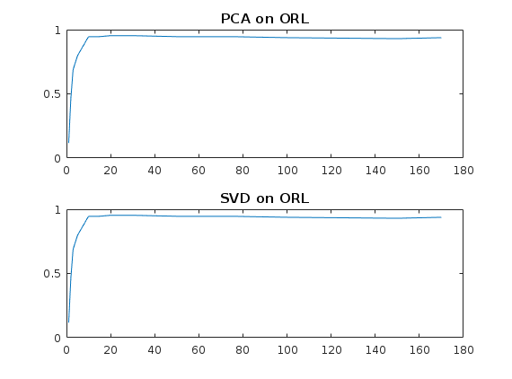
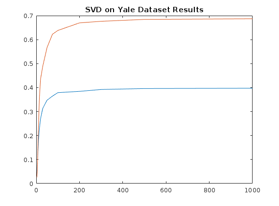

Contents
MyMainScript
tic;
PCA/SVD Testing on ORL Database
Array of testing values for k Instead of recalculating U for each k, calculating for 170, then considering only first k vectors
k = [1 2 3 5 10 15 20 30 50 75 100 150 170]; [U_pca, alpha_pca, Average] = myPCADatabasing(170); recRateOrl_pca = arrayfun(@(x) myPCAChecker(U_pca(:,1:x), alpha_pca(1:x,:), Average), k); [U_svd, alpha_svd,~] = mySVDDatabasing(170); recRateOrl_svd = arrayfun(@(x) mySVDChecker(U_svd(:,1:x), alpha_svd(1:x,:), Average), k);
SVD Testing of Cropped Yale Dataset
Finding in one shot both probability percentages with and without top 3 eigencoefficients
k1 = [1 2 3 5 10 15 20 30 50 75 100 200 300 500 1000]; [U_yale, alpha_yale, Avg_yale] = mySVDYaleDatabasing(1000); [recRateAll, recRateIllumInv] = arrayfun(@(x) mySVDYaleChecker(U_yale(:,1:x), alpha_yale(1:x,:), Avg_yale), k1); toc;
Elapsed time is 91.949506 seconds.
Plotting all the results below
% Plot of PCA and SVD on ORL Database figure; subplot(2,1,1); plot(k, recRateOrl_pca); title('PCA on ORL'); subplot(2,1,2); plot(k, recRateOrl_svd); title('SVD on ORL'); % Plot of SVD on Yale, comparing with and without top 3 eigenfaces figure; plot(k1, recRateAll); hold on; plot(k1, recRateIllumInv); title('SVD on Yale Dataset Results'); 